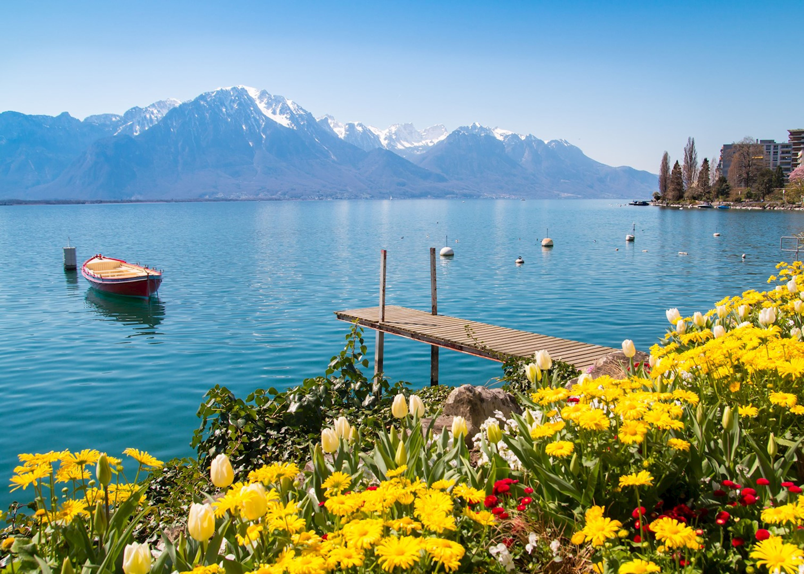
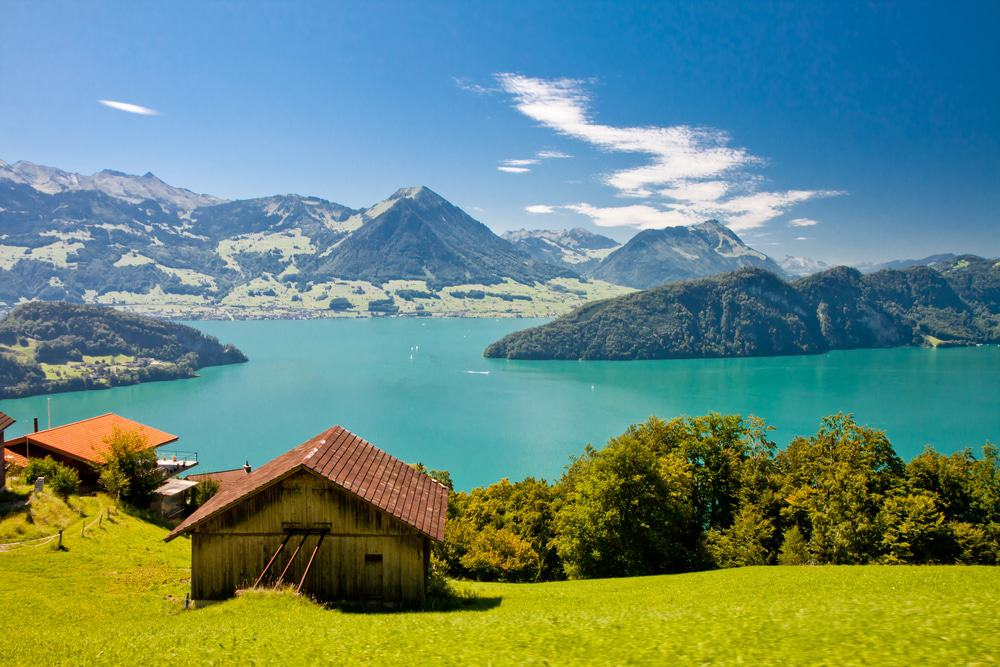
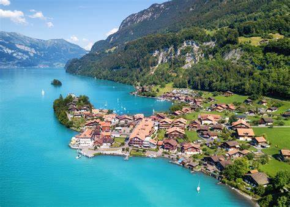

Zermatt and the Matterhorn
Visit Zermatt for breathtaking views of the Matterhorn, one of the most iconic mountains in the world.

Visit Zermatt for breathtaking views of the Matterhorn, one of the most iconic mountains in the world.
Lake Geneva, surrounded by vineyards and mountain views, is perfect for a relaxing escape.
Lucerne offers a charming mix of old town streets, lake views, and access to the nearby Swiss Alps.
For outdoor adventures, Interlaken is the gateway to numerous activities such as skiing, hiking, and paragliding.
